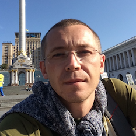

|
| Andrii Aheiev DevOps, Cloud Architect Amstelveen, The Netherlands mail: a.ageyev@gmail.com skype: a.ageyev LinkedIn | GitHub | Bitbucket | Puppet Forge
|
|
| Design, build, automate infrastructure and DevOps processesDevOps Engineer with 12+ years of experience in managing cloud infrastructure, ci/cd processes and automation. Practical experience in Kubernetes administration and dockerized application management, Linux and database management. - Design and implement infrastructure as code for AWS, Azure, Google Cloud, DigitalOcean and more.
- Design, implement, secure and automate CI/CD processes and application infrastructure using microservices architecture (Docker + Kubernetes).
- Design and support application migration from VM-based infrastructure to dockerized microservices in Kubernetes.
- Design and build infrastructure and processes for ML
- Bringing operation requirements to software engineering and provide maximum scalability and availability for applications and services.
Building and optimizing cloud applications infrastructureDescribe OS, software, network, computer resources and create Infrastructure and Configuration As Code with Terraform, Ansible, Puppet, and other tools on different clouds: AWS, Azure, Google Cloud, DigitalOcean, etc. - Optimizing infrastructure and application for high load and high availability.
- Implement infrastructure as code and automate change management.
- Design and implement application, infrastructure and security monitoring.
- Define and implement incident management for monitoring and audit
- Define and automate disaster recovery processes. Implement data archiving.
Implementing CI/CD processes for dockerized apps and KubernetesAutomate CI/CD processes with Jenkins, Azure DevOps, Teamcity (or other) pipelines to implement - Build application with docker. Move build to the Dockerfile using multistage build.
- Scan, publish and promote docker image to container registry
- Deploy docker container to Kubernetes with helm and run integration tests
- Automate integration, acceptance or distributed performance testing
Machine Learning workflows automation and CI/CD- Dynamic environment for ML train processes in Kubernetes or Computer Cloud
- Microservice configuration and profiling for ML prediction application
- Build, test and deploy pipelines for Kubernetes
|
Experience |
|
|
Feb 2020 – now
Azure AKS Docker Kubernetes Helm Automation CI/CD PowerShell Azure DevOps Azure Pipelines Aqua Security CISO SEM IaC PostgreSQL Azure Service Bus
|
| Site Reliability Engineer XLinQ / ING. Contract Infrastructure development and CI/CD processes automation- Infrastructure cloud design and configuration in Azure
- Micro-services design and full lifecycle implementation (build, test, Kubernetes deploy)
- CI/CD processes automation with Azure DevOps
- Infrastructure/application monitoring design and implementation with Azure Monitoring and Log Analytics
- Security monitoring. Implementation of CISO and SEM rules with Azure Sentinel
- Kubernetes infrastructure and ci security for docker images
|
June 2018 – Jan 2020 Docker Kubernetes helm Automation Jenkins CI/CD Ansible Azure AWS Groovy Ruby Airflow ML H2O Kafka Kinesis Jetty Ruby .Net MSSQL
|
| Senior DevOps PitneyBowes. Contract Development infrastructure and CI/CD processes automation- Jenkins CI/CD Pipelines: build, test, publish and deploy microservices (NodeJS, Dotnet with Docker and Kubernetes). Release preparation.
- Application infrastructure design and implementation with docker and Kubernetes (AKS, EKS)
- Design and implementation Machine Learning CI/CD pipelines (train, test and deploy prediction application)
What was done: - Dockerized complex .Net event-processing application and created set of microservices
- Application requirements (health checks, logging, resources profiling, etc.)
- Local Dev / Test environment with docker-compose
- QA/ Stage / prod environment deploys in Kubernetes using helm charts
- Integration testing
- Events synchronization from Kafka to AWS Kinesis
- Local model with docker-compose
- Permanent Azure AWS events synchronization implemented on AKS
- Infrastructure migration from Azure to AWS (development and CI/CD)
- ML prediction app pipelines - design and automation
- Dynamic H2O cluster
- Docker jetty container with H2O models
- Deploy and performance testing
|
May 2017 - May 2018 AWS Ansible Jenkins Ruby Automation Backup Archiving |
| Senior WebOps Provectus for Determine. Contract SaaS Product infrastructure and processes automation. Infrastructure and processes automation (AWS, Jenkins) Backup and archiving processes automation for files and Oracle Databases (RDS) What was implemented: - Redesigned and implemented automated process for SaaS backup and archiving
- Created custom inventory service with scheduled information update
- Improved monitoring processes
|
Oct 2016 - Apr 2017
Google Cloud Automation Ansible Puppet Terraform Jira Confluence MySQL Atlassian AWS Puppet MPI Cluster Docker Bamboo MacOS
|
| DevOps Architect Nest. Contract Dev Infrastructure migration from AWS to Google Cloud.- Infrastructure design for Development services in Google Cloud Platform (Atlassian stack and build infrastructure) Automate infrastructure provisioning and configuration.
- Created migration plan to move infrastructure services from AWS cloud to GCP cloud.
|
May 2012 - Apr 2017
Private Cloud, Web Infrastructure VMware MySQL automation CI/CD High-Load Puppet
|
| DevOps Architect Freelancer Full infrastructure and DevOps support for multiple small web-projects- Cloud infrastructure design and automation
- Domain and SSL management
- Private Cloud design and implementation (VMware, HP, Dell, EMC)
- Cloud infrastructure and CI/CD automation
- Security audit. PCI DCC.
|
Aug 2005 - Apr. 2012
Oracle Linux Puppet PHP Ruby VMware Private Cloud RHEL Windows Server Active Directory SLES HP SAN |
| Lohika Site IT manager / Ops Lead Entire site operation, IT infrastructure and team management, site IT budget planning. Communication with software and hardware vendors and resellers. Communication with local service-providers. On that position: - Prepared budget for Private Cloud (for local datacenter). Dealing directly with software and hardware resellers to get best terms and prices.
- Design and deployment of Private Cloud on external datacenter.
- Implemented a new workflow to deliver resources to DEV and QA, which allows us to more flexible planning and managing resources.
- Designed and implemented IT infrastructure for two new office-spaces in Odessa. (Telephony, networking, conference-rooms, etc.)
Senior IT / DevOps Installing and managing different application environments with separated or shared DB (Oracle, MySQL, SQL) Linux Administrator, Oracle DBA – support all instances of Oracle RDBMS on entire the site On that position: - Build from scratch Virtual Private Cloud on existing hardware. Implement new workflow to ordering new resources to existing Cloud
- Provide internal education on Red Hat Linux, Oracle DB to QA and developers
|
Apr 2003 - Aug 2005
Linux FreeBSD MySQL Telecom Perl PHP DialUp PostgreSQL
|
| Software Engineer / DBA TWT Ukraine Development and support for telecom billing.On that position: - Changed core database from MySQL to PostgreSQL
- Business logic moved from different system parts written on C++, Perl and PHP to PostgreSQL stored procedures
- Optimizer and automated reporting processes
|
Education |
|
|
1998 - 2003 |
| Odesa State Polytechnic UniversityComputer and Network Systems |
2016
|
| MongoDB UniversityM102. MongoDB for DBA |
2011
|
| HP Education centerVMware vSphere 4.0 – Deploy, Configure, Manage |
2006
|
| Kvazar Micro Education centerOracle 10G Administrator |